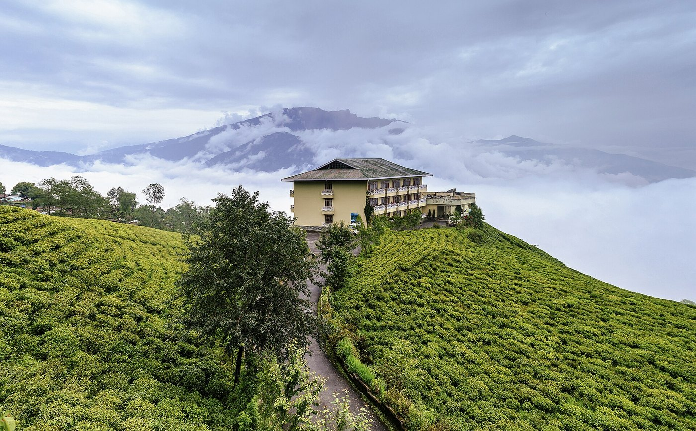
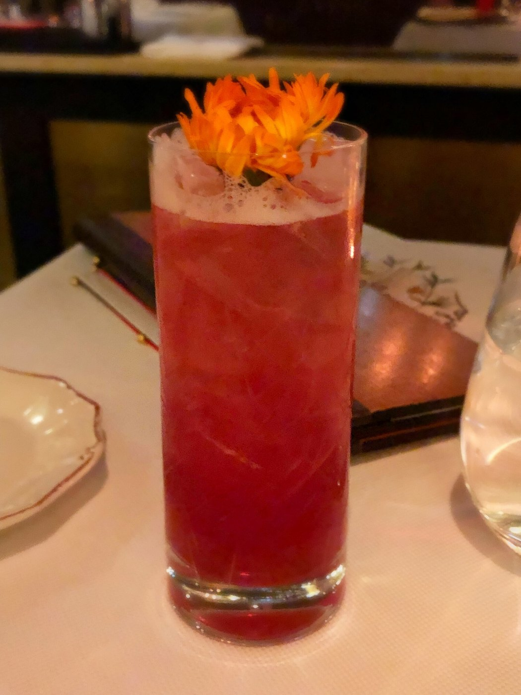
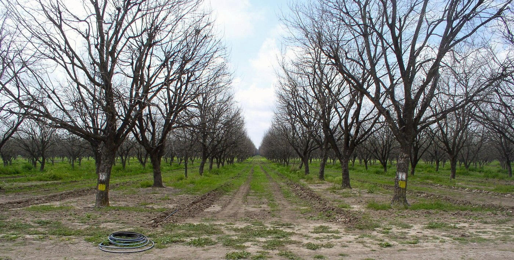
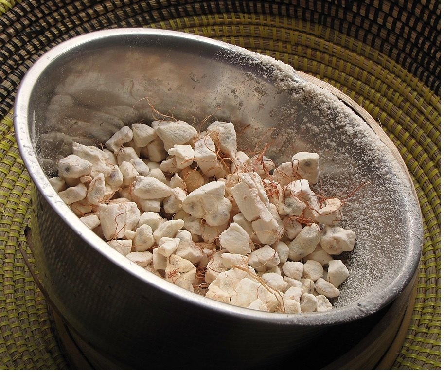
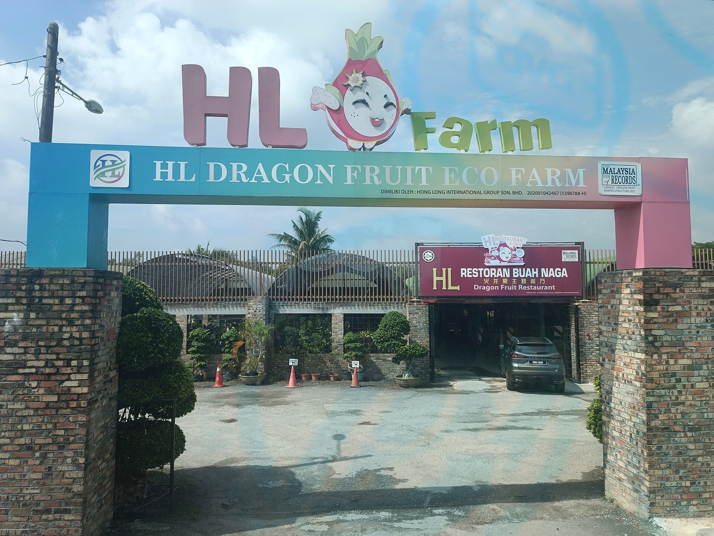

HAND-HARVESTED PITAYA & COLD-PRESSED NECTARS.
From fresh orchard harvest crates shipped same-day to raw unpasteurized pitaya juice bottles, our botanical atelier supplies executive chefs, luxury wellness spas, and fruit connoisseurs.
ORCHARD HARVEST TIERS
Select your desired botanical allocation and customize your delivery schedule.
Tier I: Fresh Hand-Selected Orchard Crates
Hand-picked at peak 18.5° Brix maturity from our organic trellises. Packed in ventilated wooden crates cushioned with natural wood excelsior to prevent scale bruising during transport.
- ✓ 100% Tree-Ripened Red & White Cultivars
- ✓ Minimum 18.0° Brix Sugar Content
- ✓ Shipped via Express Refrigerated Courier
- ✓ Delivery Window: 24 to 48 Hours
Tier II: Cold-Pressed Pure Raw Pitaya Nectar
Single-origin unpasteurized juice extracted through hydraulic cold presses with zero added sugars, preservatives, or artificial dyes. Flash-frozen to preserve live active enzymes and betacyanins.
- ✓ 100% Pure Undiluted Red Dragon Fruit
- ✓ Zero Heat Hydraulic Extraction
- ✓ Certified Bio-Active Antioxidants
- ✓ Delivery Window: Weekly Subscription
Tier III: Freeze-Dried Botanical Superfood Powder
Sub-zero lyophilized pink pitaya powder preserving 98% of natural vitamin C, dietary fiber, and magenta pigments. Dissolves effortlessly into smoothie bowls, pastries, and lattes.
- ✓ Micro-Milled 200 Mesh Consistency
- ✓ Zero Added Carriers or Maltodextrin
- ✓ Resealable UV-Barrier Storage Pouch
- ✓ Delivery Window: Immediate Dispatch
Tier IV: Private Tasting Salon & Orchard Consultation
An exclusive sensory journey at our 181 Mercer Street salon in New York. Taste raw cultivars, cold-pressed mocktails, and botanical infusions while consulting with our head orchardist.
- ✓ Flight of 5 Rare Heirloom Cultivars
- ✓ Custom Culinary Formulation Advisory
- ✓ Botanical Plant Tissue Propagation Kit
- ✓ Delivery Window: By Appointment
THE BOTANICAL SPECTRUM OF PITAYA
Examine the diverse culinary preparations, seed lipids, and agronomic systems developed at our orchard.

INFUSIONDried Petal Botanical Tea
Sun-dried Hylocereus flower petals steeped with lemongrass and hibiscus for a soothing caffeine-free floral infusion.

BEVERAGESparkling Pitaya Spritz
Refreshing effervescent mocktail combining red pitaya reduction, cold-pressed Persian lime, and mountain spring water.
 LIPIDS
LIPIDS
Cold-Pressed Seed Oil
Virgin lipid serum extracted from tiny black pitaya seeds, delivering high concentrations of linoleic and oleic fatty acids.

AGRONOMYSubterranean Drip Lines
Automated sensor-driven drip emitters nourish cactus root mats with zero evaporation or surface runoff.

SUPERFOODPink Pitaya Powder
Low-temperature freeze-dried fruit powder that adds dazzling natural magenta color and rich antioxidants to culinary creations.

ORCHARDCertified Organic Orchard
Rows of mature trellis cacti yielding succulent, pesticide-free tropical dragon fruits throughout the sun-drenched harvest season.